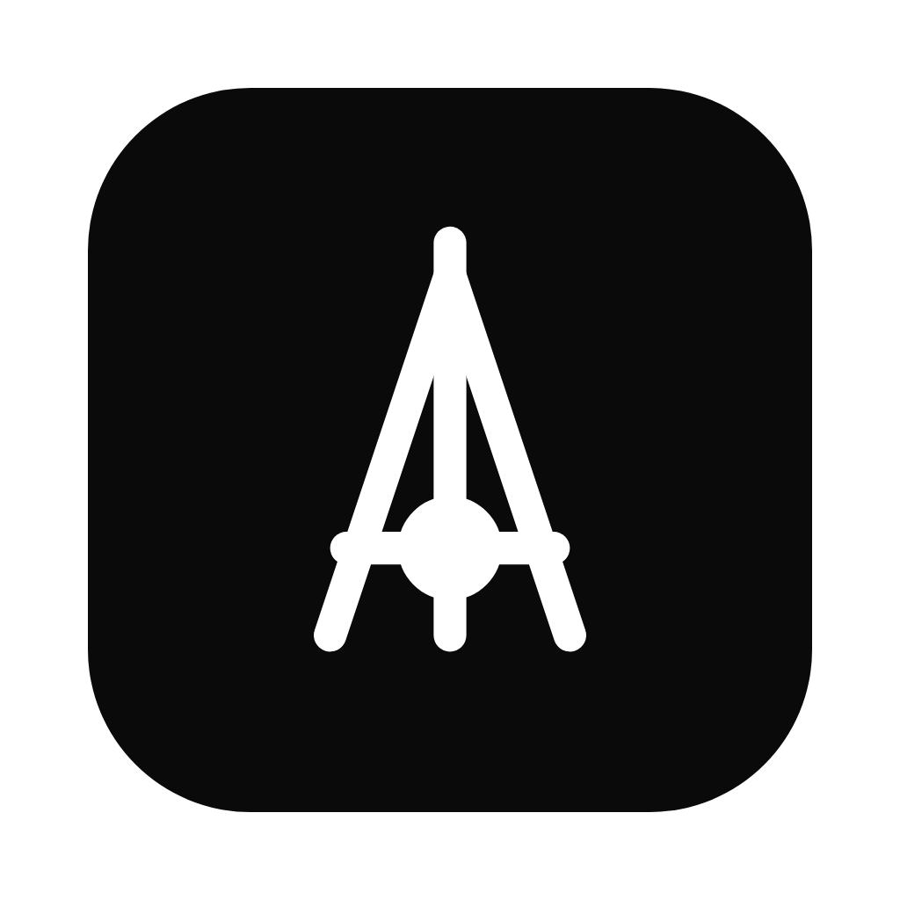

You're offline
Aoient needs an internet connection to load your workspace. Your data is safe on our servers.
We'll reconnect automatically when you're back online.
Aoient needs an internet connection to load your workspace. Your data is safe on our servers.
We'll reconnect automatically when you're back online.